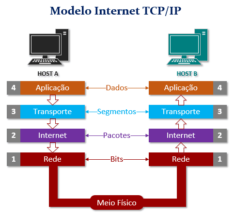

O modelo de interconexão de sistemas abertos (OSI) é um modelo conceitual criado pela Organização Internacional de Normalização que permite que diversos sistemas de comunicação se comuniquem usando protocolos padronizados.
O OSI é o primeiro modelo padrão de comunicação entre sistemas de computadores e redes, ele faz uso de sete camadas para garantir essa conversa. A maioria das empresas da área de computadores e telecomunicações o adotou no início dos anos 80. A partir daí, a Organização Internacional de Normalização (ISO) o transformou na principal referência em 1984.
O TCP/IP (Transmission Control Protocol/Internet Protocol) representa um conjunto de protocolos que permitem que diversos equipamentos que constituem uma rede possam comunicar entre si. É um protocolo estruturado por camadas na qual cada camada utiliza e presta serviços às camadas adjacentes. Cada camada apenas trata das informações que correspondem à sua função.
Camada Aplicação: como o nome diz, usamos esta camada para definir o uso ou finalidade da transmissão dos protocolos relacionados ao programa. Existem diversos tipos para distintas aplicações, como por exemplo, para troca de e-mails (SMTP), Internet (HTTP), arquivos (FTP)
Camada Transporte: é responsável pela maneira que os dados serão transmitidos pela rede, conforme o uso, prioridade ou criticidade do conteúdo trafegado. Esta camada define a melhor maneira de os dados serem transmitidos. Estão inclusos aqui os protocolos TCP e UDP
Camada de Internet: ela é responsável pelo roteamento de origem e destino dos pacotes. Por meio dela, os dispositivos de diversas redes privadas e públicas encontram-se para troca de pacotes e informações solicitadas por diversas aplicações
Camada de Enlace: cuida do conjunto de protocolos que fazem o enquadramento dos dados anteriormente definidos e a transmissão em camada física de todo o conjunto. Usa métodos e padrões que possam concluir a transmissão de maneira segura e confiável, de fim a fim. Tecnologias como Wi-Fi e Ethernet trabalham ativamente nesta camada.
O protocolo de datagramas do usuário (UDP) opera sobre o protocolo da Internet (IP) para transmitir datagramas em uma rede. O UDP não exige que a origem e o destino estabeleçam um handshake triplo antes que a transmissão ocorra. Além disso, não há necessidade de uma conexão de ponta a ponta.
O UDP é usado nessa transmissão de dados de voz e vídeo, tornando mais fluido e rápido o envio de pacotes.
O FTP (File Transfer Protocol) ou Protocolo de Transferência de Arquivos, em português, é um protocolo usado para transferir arquivos por uma rede de computadores, desde uma local à internet.
Basicamente, permite a troca de arquivos entre dois computadores de modo direto, em que um ganha acesso às pastas do outro.
O Sistema de Nomes de Domínio, mais conhecido pela nomenclatura em Inglês Domain Name System, é um sistema hierárquico e distribuído de gestão de nomes para computadores, serviços ou qualquer máquina conectada à Internet ou a uma rede privada.
Os servidores DNS convertem solicitações de nomes em endereços IP, controlando qual servidor um usuário final alcançará quando digitar um nome de domínio no navegador da web.
DHCP é um protocolo de configuração dinâmica para uma rede de computadores. Ou seja, uma série de definições de gerenciamento que são usadas para tornar o processo de configuração de dispositivos em redes IP automatizados.
Sua função é atribuir automaticamente aos dispositivos conectados:
Os servidores DNS convertem solicitações de nomes em endereços IP, controlando qual servidor um usuário final alcançará quando digitar um nome de domínio no navegador da web.
HTTPS é uma implementação do protocolo HTTP sobre uma camada adicional de segurança que utiliza o protocolo TLS/SSL. Essa camada adicional permite que os dados sejam transmitidos por meio de uma conexão criptografada e que se verifique a autenticidade do servidor e do cliente por meio de certificados digitais.
Servidor web é um software responsável por aceitar pedidos em HTTP de clientes, geralmente os navegadores, e servi-los com respostas em HTTP, incluindo opcionalmente dados, que geralmente são páginas .